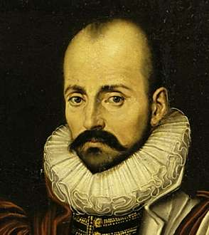

Борис Акунин
Мой календарь
Очень люблю Мишеля де Монтеня, родившегося в 1533 году, в последний день зимы. Полюбите автора «Опытов» и вы. Этот философ учит самому главному: что жить нужно осмысленно и что самая главная твоя задача - понять самого себя. Если ты понял себя, ты поймешь и человечество. Поймешь вообще всё.
Сделать это нужно по очень простой и ясной причине. Кто понял себя, получает отличный шанс стать счастливым, а это и есть цель, ради которой стоит жить.
Это я очень коротко и упрощенно пересказал самую суть многолетних записей, которые вел лобастый житель мрачных времен, совершенно не располагавших ни к счастью, ни к отвлеченным размышлениям.
Выражусь категорично: кто живет не по Монтеню, проживет свою жизнь впустую.
Сегодня, 28 февраля, садимся, берем шесть листков бумаги и занимаемся самопознанием. На первом листке пишем, что нам про себя понятно, на втором - что непонятно. Потом - что нам в себе нравится и что не нравится. Потом - что нужно в себе развивать и что нужно из себя изгонять.
А цитаты из «Опытов» нам помогут:
«Жизнь сама по себе - не благо и не зло: она вместилище и блага, и зла, смотря по тому, во что вы сами ее превращаете».
«Всё в человеке идет вместе с ним или в гору, или наложит морщины на нашу душу, а не на лицо».
«Душа извлекает для себя пользу решительно из всего. Даже заблуждения, даже сны - и они пригодятся: у души всё идет в дело».
«Если бы человек хотел быть только счастливым, то это было бы легко, но всякий хочет быть счастливее других, а это почти всегда очень трудно, ибо мы обыкновенно считаем других счастливее, чем они есть на самом деле».
«Я считаю себя заурядным человеком, и единственное незаурядное во мне то, что я считаю себя заурядным человеком».